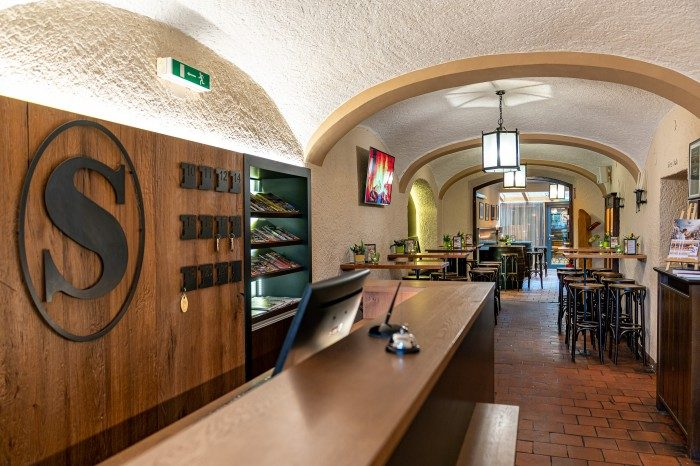
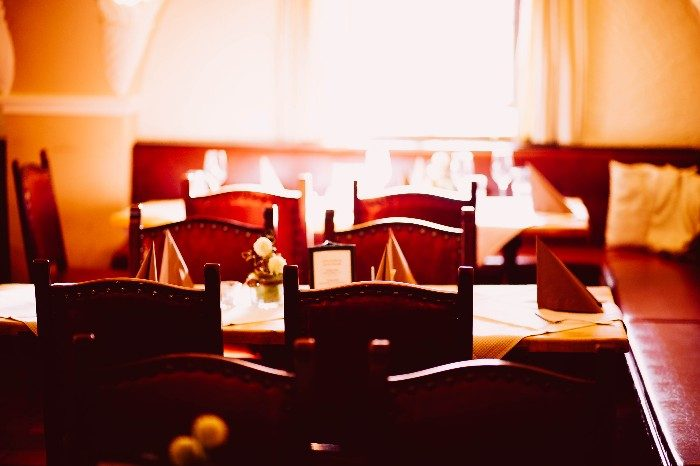
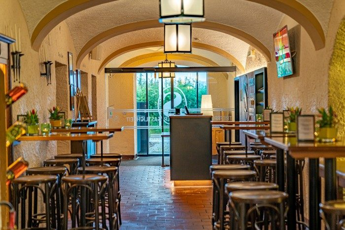
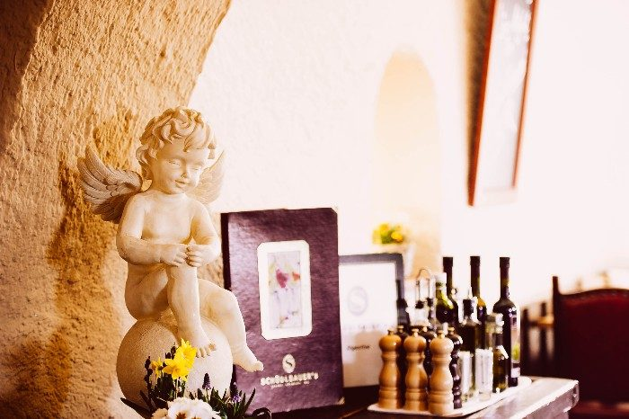
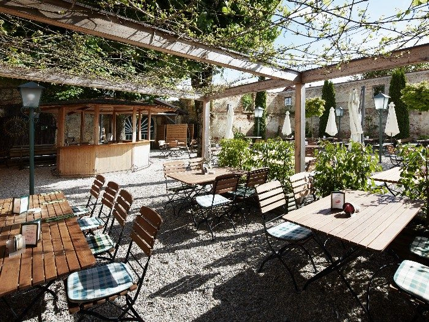
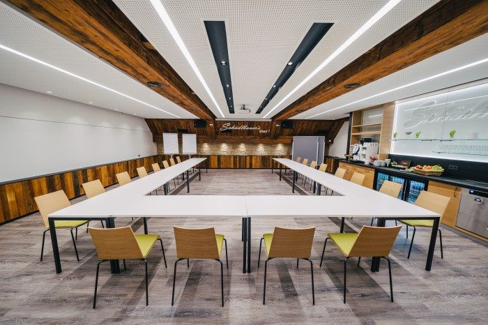

Hotel****
Sechs Doppelzimmer, drei Einzelzimmer, ein Studio und eine Suite mit 80 bzw. 90 m² – Platz für bis zu 24 Gäste, Boxspringbetten, Minibar, Zimmersafe und gratis WLAN.
Braunau am Inn · seit Generationen
Moderne Gastlichkeit im historischen Vierkanthof: Hotel mit Design-Komfortzimmern, eine Küche mit Falstaff-Gabel, eine Bar mit Charakter und ein Event-Stadl für die großen Feste.
Tisch reservieren Zimmer anfragen

Ein Hof, drei Häuser
Sechs Doppelzimmer, drei Einzelzimmer, ein Studio und eine Suite mit 80 bzw. 90 m² – Platz für bis zu 24 Gäste, Boxspringbetten, Minibar, Zimmersafe und gratis WLAN.

Küchenchef Matthias und sein Team kochen regional und saisonal: Hausmannskost, feine Vorspeisen, Fisch aus heimischen Gewässern und Fleisch von bäuerlichen Betrieben der Umgebung.

Seit 2010 fixer Punkt der Braunauer Barszene: Whiskys, Wodkas, Rums, Cognacs und Armagnacs, Cocktails, Bar-Snacks – und auf Wunsch exklusiv für dich allein.

Das Haus
Das Schüdlbauer’s vereint, was gute Gastronomie heute ausmacht: Qualität, Regionalität und Atmosphäre – mitten in einem liebevoll restaurierten Vierkanthof.
Ob gemütliche Gasthaustradition oder lässiges Lounge-Feeling: Hier trifft stilvolles Ambiente auf herzliche Gastfreundschaft. Das junge Team rund um Gastgeber Josef Gann sorgt mit Charme und echter Leidenschaft dafür, dass sich alle wohlfühlen – vom spontanen Einkehrer bis zur Genießerin mit Anspruch.
Mitten im Freizeitparadies gelegen, ist das Schüdlbauer’s die perfekte Adresse nach dem Tennis, Schwimmen oder Golfen – oder einfach zum Runterkommen und Genießen.
Täglich frisch
Mittags
Regional. Frisch. Schnell serviert. Jeden Tag gibt es ein ausgewähltes Gericht zum attraktiven Preis – frisch gekocht, beliebt und nur solange der Vorrat reicht. Ideal für die Mittagspause, den kurzen Business-Lunch oder ein entspanntes Essen mit Freunden.
Morgens
Frisches Gebäck vom Bäcker ums Eck, Wurst und Schinken vom regionalen Metzger, Eierspeisen, Joghurt, Müsli, Obstsalat und Säfte vom Obstbauern nebenan. Kinder bis 12 Jahre € 13,00.
Ausgezeichnet
Event-Stadl & Seminar-Stad’l

Trauung im romantischen G’wölb oder unter freiem Himmel im Garten, danach ab in den Event-Stadl mit eigener Bar – fürs Brautstehlen, Tanzen und Feiern bis spät in die Nacht.

U-Form bis 25, Klassenzimmer bis 40, Kino bis 60 Personen – mit Beamer, Flipcharts, Moderationskoffer, Mikrofon und WLAN im gesamten Seminarbereich.
Alles ganz nah
Das Freizeitzentrum Braunau liegt gleich ums Eck: Tennis, Schwimmen, Golfen – und danach ein Platz in der Wirtshaus Lounge oder im Gastgarten. Der hauseigene Parkplatz ist kostenlos, eine E-Ladestation für PKW und ein versperrter Abstellplatz für Fahrräder mit Ladestation stehen bereit.
Gutscheinwelt
Sie suchen noch das passende Geschenk – für die Liebste, den besten Freund oder den runden Geburtstag eines Geschäftspartners? Ob kulinarischer Genuss, entspannte Nächte im Hotel oder ein besonderes Erlebnis: In der Schüdlbauer’s Gutscheinwelt wählen Sie den passenden Wert und Anlass.